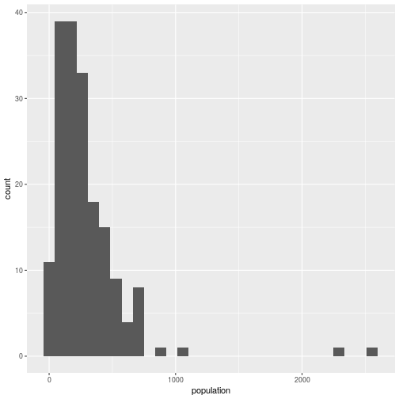

Data must be:
Organized
Cleaned
Manipulated
Analyzed
The first three often take the most time, and this is often because researchers undervalue them.
There’s never time to do it right … but there’s always time to do it over!
library(tidyverse)## Loading tidyverse: ggplot2
## Loading tidyverse: tibble
## Loading tidyverse: tidyr
## Loading tidyverse: readr
## Loading tidyverse: purrr
## Loading tidyverse: dplyr## Conflicts with tidy packages ----------------------------------------------## filter(): dplyr, stats
## lag(): dplyr, statsvillageTable <- read.csv("~/git/Malaria/village.csv")
summary(villageTable)## area village grid fup
## A1 : 8 Min. : 1.0 4C : 7 Min. : 1.000
## A2 :62 1st Qu.:211.2 7C : 7 1st Qu.: 3.000
## B :85 Median :362.5 8E : 7 Median : 6.000
## Babura : 1 Mean :402.0 4B : 6 Mean : 6.217
## Banzoma: 5 3rd Qu.:565.2 4D : 6 3rd Qu.: 7.000
## C : 5 Max. :967.0 6B : 6 Max. :92.000
## Ringim :14 (Other):141
## vname vu grouped1 grouped2
## Daurawa : 2 Kar :26 Min. : 0.00 Min. : 0.0000
## Sabon Gari : 2 Dok :21 1st Qu.: 0.00 1st Qu.: 0.0000
## Adinis Fulanin: 1 Kit :18 Median : 24.50 Median : 0.0000
## Aduwa : 1 Aju :13 Mean : 37.06 Mean : 0.7833
## Ajura : 1 Gar :13 3rd Qu.: 52.25 3rd Qu.: 1.0000
## Anju : 1 Sug :13 Max. :550.00 Max. :10.0000
## (Other) :172 (Other):76
## scattered1 scattered2 population
## Min. : 0.00 Min. :0.00000 Min. : 0.0
## 1st Qu.: 0.00 1st Qu.:0.00000 1st Qu.: 124.0
## Median : 6.00 Median :0.00000 Median : 222.0
## Mean : 14.29 Mean :0.01111 Mean : 287.1
## 3rd Qu.: 22.00 3rd Qu.:0.00000 3rd Qu.: 375.0
## Max. :117.00 Max. :1.00000 Max. :2556.0
## parasiteTable <- read.csv("~/git/Malaria/parademo.csv")
summary(parasiteTable)## id village compound survey
## Min. : 1 Min. : 51.0 Min. : 1 Min. : 1.00
## 1st Qu.: 2671 1st Qu.:202.0 1st Qu.: 40 1st Qu.: 6.00
## Median : 6186 Median :220.0 Median :205 Median :10.00
## Mean : 5980 Mean :337.3 Mean :176 Mean :10.61
## 3rd Qu.: 8993 3rd Qu.:552.0 3rd Qu.:249 3rd Qu.:15.00
## Max. :12849 Max. :806.0 Max. :949 Max. :23.00
##
## person sch X_add tribe
## Min. : 1.000 Min. :0.000 Min. :1.000 Min. :0.00000
## 1st Qu.: 2.000 1st Qu.:1.000 1st Qu.:2.000 1st Qu.:0.00000
## Median : 5.000 Median :1.000 Median :2.000 Median :0.00000
## Mean : 6.745 Mean :1.189 Mean :1.906 Mean :0.08756
## 3rd Qu.: 9.000 3rd Qu.:1.000 3rd Qu.:2.000 3rd Qu.:0.00000
## Max. :99.000 Max. :5.000 Max. :2.000 Max. :3.00000
##
## hght sleep dist baby
## Min. : 0.00 Min. :0.0000 Min. :0.00e+00 Min. :0.000
## 1st Qu.: 0.00 1st Qu.:1.0000 1st Qu.:0.00e+00 1st Qu.:2.000
## Median : 0.00 Median :1.0000 Median :0.00e+00 Median :2.000
## Mean : 15.33 Mean :0.7863 Mean :7.96e-05 Mean :1.714
## 3rd Qu.: 0.00 3rd Qu.:1.0000 3rd Qu.:0.00e+00 3rd Qu.:2.000
## Max. :985.00 Max. :2.0000 Max. :2.00e+00 Max. :2.000
##
## alive datecoll coll
## Min. :0.000000 1973-12-20: 464 Min. : 0
## 1st Qu.:0.000000 1972-12-27: 383 1st Qu.: 1
## Median :0.000000 1974-08-01: 375 Median : 1
## Mean :0.005442 1972-05-03: 355 Mean : 138
## 3rd Qu.:0.000000 1973-12-31: 346 3rd Qu.: 1
## Max. :2.000000 1973-04-27: 337 Max. :19000000
## (Other) :135937
## sliden car1 ncar1 car2
## Min. : 0 Min. :0.000 Min. : 0.00 Min. :0.000
## 1st Qu.: 14967 1st Qu.:1.000 1st Qu.: 0.00 1st Qu.:1.000
## Median : 47182 Median :3.000 Median : 0.00 Median :3.000
## Mean : 49504 Mean :2.263 Mean : 85.08 Mean :2.298
## 3rd Qu.: 81473 3rd Qu.:3.000 3rd Qu.: 0.00 3rd Qu.:3.000
## Max. :117927 Max. :3.000 Max. :30000.00 Max. :3.000
##
## ncar2 filt nfilt fever
## Min. : 0.000 Min. :0.000 Min. :0.0e+00 Min. :0.000
## 1st Qu.: 0.000 1st Qu.:1.000 1st Qu.:0.0e+00 1st Qu.:2.000
## Median : 0.000 Median :3.000 Median :0.0e+00 Median :2.000
## Mean : 1.888 Mean :2.279 Mean :7.3e-02 Mean :1.694
## 3rd Qu.: 0.000 3rd Qu.:3.000 3rd Qu.:0.0e+00 3rd Qu.:2.000
## Max. :4200.000 Max. :3.000 Max. :1.0e+04 Max. :2.000
##
## datep micro dateexam slide
## 0000-00-00: 19703 Min. : 0.000 0000-00-00:38403 Min. : 0
## 1973-12-20: 410 1st Qu.: 5.000 1972-08-22: 261 1st Qu.: 14967
## 1974-08-01: 344 Median : 7.000 1973-03-08: 255 Median : 47182
## 1972-05-03: 306 Mean : 7.226 1972-01-11: 250 Mean : 49504
## 1973-05-22: 303 3rd Qu.:10.000 1973-03-06: 249 3rd Qu.: 81473
## 1972-07-27: 282 Max. :90.000 1972-08-21: 247 Max. :117927
## (Other) :116849 (Other) :98532
## exam pfa pfg pm
## Min. : 0.0 Min. : 0.00 Min. : 0.0000 Min. : 0.000
## 1st Qu.:200.0 1st Qu.: 0.00 1st Qu.: 0.0000 1st Qu.: 0.000
## Median :200.0 Median : 0.00 Median : 0.0000 Median : 0.000
## Mean :198.3 Mean : 16.05 Mean : 0.5428 Mean : 1.442
## 3rd Qu.:200.0 3rd Qu.: 3.00 3rd Qu.: 0.0000 3rd Qu.: 0.000
## Max. :462.0 Max. :449.00 Max. :392.0000 Max. :400.000
##
## po ppfa ppfg ppm
## Min. : 0.0000 Min. :0.0000 Min. :0.00000 Min. :0.00000
## 1st Qu.: 0.0000 1st Qu.:0.0000 1st Qu.:0.00000 1st Qu.:0.00000
## Median : 0.0000 Median :0.0000 Median :0.00000 Median :0.00000
## Mean : 0.1589 Mean :0.2982 Mean :0.08759 Mean :0.09235
## 3rd Qu.: 0.0000 3rd Qu.:1.0000 3rd Qu.:0.00000 3rd Qu.:0.00000
## Max. :396.0000 Max. :1.0000 Max. :1.00000 Max. :1.00000
##
## ppo pf smove agec
## Min. :0.000000 Min. : 0.00 Min. :0.00000 Min. :0.00000
## 1st Qu.:0.000000 1st Qu.: 0.00 1st Qu.:0.00000 1st Qu.:0.00000
## Median :0.000000 Median : 0.00 Median :0.00000 Median :0.00000
## Mean :0.009935 Mean : 16.38 Mean :0.00657 Mean :0.00419
## 3rd Qu.:0.000000 3rd Qu.: 3.00 3rd Qu.:0.00000 3rd Qu.:0.00000
## Max. :1.000000 Max. :449.00 Max. :1.00000 Max. :7.00000
## These are different functions, and often call for different ways of formatting data
This is why we have computers
Convenient for users
Some amount of redundancy is good (to catch errors)
Often a “wide” format (related information on the same row)
Scanning for patterns and problems
Making tables for publication
Making data frames for statistical analysis
You don’t want any redundancy in your database (although you might in your data set)
Removing redundancies is a great way to check data integrity
head(parasiteTable)## id village compound survey person sch X_add tribe hght sleep dist baby
## 1 1 801 401 1 1 1 1 1 0 1 0 2
## 2 1 801 401 2 1 1 2 0 0 1 0 2
## 3 1 801 401 3 1 1 2 0 0 1 0 2
## 4 1 801 401 4 1 1 2 0 0 1 0 2
## 5 1 801 401 5 1 1 2 0 0 1 0 2
## 6 1 801 401 6 1 1 2 0 0 1 0 2
## alive datecoll coll sliden car1 ncar1 car2 ncar2 filt nfilt fever
## 1 0 1970-11-19 1 2099 3 0 3 0 3 0 1
## 2 0 1971-02-08 1 7048 3 0 3 0 3 0 2
## 3 0 1971-04-16 1 10878 3 0 3 0 3 0 2
## 4 0 1971-06-29 1 17718 3 0 3 0 3 0 2
## 5 0 1971-09-07 1 22696 3 0 3 0 3 0 2
## 6 0 1971-11-30 1 36018 3 0 3 0 3 0 2
## datep micro dateexam slide exam pfa pfg pm po ppfa ppfg ppm ppo
## 1 1970-11-19 2 1970-12-19 2099 201 2 0 0 0 1 0 0 0
## 2 1971-02-08 5 1971-03-17 7048 200 0 0 0 0 0 0 0 0
## 3 1971-04-16 2 1971-05-17 10878 200 0 0 0 0 0 0 0 0
## 4 1971-06-29 11 1971-07-14 17718 200 0 0 3 0 0 0 1 0
## 5 1971-09-07 1 1971-09-10 22696 200 0 0 0 0 0 0 0 0
## 6 1971-11-30 10 1971-12-03 36018 200 0 0 0 2 0 0 0 1
## pf smove agec
## 1 2 0 0
## 2 0 0 0
## 3 0 0 0
## 4 0 0 0
## 5 0 0 0
## 6 0 0 0No redundancy
Break data into separate tables following the logic of the data
Clear “keys” to describe the information in each row
Break data into logical tables
Clean, maintain and merge data in the database
Export files for analysis, presentation, etc.
villageTable <- (villageTable
%>% transform(village=as.factor(village))
)
summary(villageTable)## area village grid fup
## A1 : 8 1 : 1 4C : 7 Min. : 1.000
## A2 :62 2 : 1 7C : 7 1st Qu.: 3.000
## B :85 3 : 1 8E : 7 Median : 6.000
## Babura : 1 4 : 1 4B : 6 Mean : 6.217
## Banzoma: 5 5 : 1 4D : 6 3rd Qu.: 7.000
## C : 5 6 : 1 6B : 6 Max. :92.000
## Ringim :14 (Other):174 (Other):141
## vname vu grouped1 grouped2
## Daurawa : 2 Kar :26 Min. : 0.00 Min. : 0.0000
## Sabon Gari : 2 Dok :21 1st Qu.: 0.00 1st Qu.: 0.0000
## Adinis Fulanin: 1 Kit :18 Median : 24.50 Median : 0.0000
## Aduwa : 1 Aju :13 Mean : 37.06 Mean : 0.7833
## Ajura : 1 Gar :13 3rd Qu.: 52.25 3rd Qu.: 1.0000
## Anju : 1 Sug :13 Max. :550.00 Max. :10.0000
## (Other) :172 (Other):76
## scattered1 scattered2 population
## Min. : 0.00 Min. :0.00000 Min. : 0.0
## 1st Qu.: 0.00 1st Qu.:0.00000 1st Qu.: 124.0
## Median : 6.00 Median :0.00000 Median : 222.0
## Mean : 14.29 Mean :0.01111 Mean : 287.1
## 3rd Qu.: 22.00 3rd Qu.:0.00000 3rd Qu.: 375.0
## Max. :117.00 Max. :1.00000 Max. :2556.0
## print(villageTable
%>% group_by(vname, vu)
%>% summarize(count = n())
)## Source: local data frame [180 x 3]
## Groups: vname [?]
##
## vname vu count
## <fctr> <fctr> <int>
## 1 Adinis Fulanin Kar 1
## 2 Aduwa Aju 1
## 3 Ajura Aju 1
## 4 Anju Dok 1
## 5 Arindi Sug 1
## 6 Asayaya Kit 1
## 7 Ba'wa Dok 1
## 8 Bakan Sabara Kar 1
## 9 Bakan Sabara II Kar 1
## 10 Balalashi Dok 1
## # ... with 170 more rowsprint(villageTable
%>% group_by(vname, vu)
%>% summarize(count = n())
%>% filter(count>1)
)## Source: local data frame [0 x 3]
## Groups: vname [0]
##
## # ... with 3 variables: vname <fctr>, vu <fctr>, count <int>print(villageTable
%>% group_by(vname)
%>% summarize(count = n())
%>% filter(count>1)
)## # A tibble: 2 × 2
## vname count
## <fctr> <int>
## 1 Daurawa 2
## 2 Sabon Gari 2If we had data like the parasite Table, we would want to break it into
A table at the level of people
A table at the level of sampling events
A table at the level of measurements
This process leads to improved clarity, _and improved cleaning__
print(parasiteTable
%>% group_by(id, village, compound)
%>% summarize(count=n())
)## Source: local data frame [13,656 x 4]
## Groups: id, village [?]
##
## id village compound count
## <int> <int> <int> <int>
## 1 1 801 401 16
## 2 2 801 401 16
## 3 3 801 401 16
## 4 4 801 401 16
## 5 5 801 401 16
## 6 6 801 401 16
## 7 7 801 401 12
## 8 8 801 401 11
## 9 9 801 401 15
## 10 9 801 417 1
## # ... with 13,646 more rowsprint(parasiteTable
%>% group_by(id, village, compound)
%>% summarize(count=n())
%>% group_by(id)
%>% summarize(count=n())
%>% filter(count>1)
)## # A tibble: 756 × 2
## id count
## <int> <int>
## 1 9 2
## 2 25 2
## 3 40 2
## 4 41 3
## 5 51 2
## 6 52 2
## 7 90 2
## 8 112 2
## 9 125 2
## 10 126 2
## # ... with 746 more rowsprint(ggplot(villageTable, aes(x=population))
+ geom_histogram()
)## `stat_bin()` using `bins = 30`. Pick better value with `binwidth`. 
Let’s say you find an obvious error in your data
## country continent count
## 1 Kenya Africa 23
## 2 Uganda Africa 31
## 3 Ungada Africa 1
## 4 Vietnam Asia 16How should you fix it?
A table:
## country patchcountry
## 1 Ungada UgandaWe should fix the real table, not the summary table
But I don’t have access to the real table in this case
patchtab <- (ctab
%>% left_join(cortab)
)## Joining, by = "country"## Warning in left_join_impl(x, y, by$x, by$y, suffix$x, suffix$y): joining
## factors with different levels, coercing to character vectorprint(patchtab)## country continent count patchcountry
## 1 Kenya Africa 23 <NA>
## 2 Uganda Africa 31 <NA>
## 3 Ungada Africa 1 Uganda
## 4 Vietnam Asia 16 <NA>NA means “Something I don’t know”. You don’t get the answers you expect if you compare things to NA:
"Jonathan" == NA## [1] NActab <- (patchtab
%>% mutate(country=ifelse(is.na(patchcountry), country, patchcountry))
%>% select(-patchcountry)
)
print(ctab)## country continent count
## 1 Kenya Africa 23
## 2 Uganda Africa 31
## 3 1 Africa 1
## 4 Vietnam Asia 16ctab <- (patchtab
%>% mutate(country=ifelse(is.na(patchcountry), country,
as.character(patchcountry)))
%>% select(-patchcountry)
)
print(ctab)## country continent count
## 1 Kenya Africa 23
## 2 Uganda Africa 31
## 3 Uganda Africa 1
## 4 Vietnam Asia 16R likes to convert characters to factors
Factors can be useful, but they’re more often weird
Be aware of this as a possible problem
The more you use tools the tidy family, the less this will happen
You might want to summarize a factor variable into categories that you define
Print out all the for a variable, and see what you think of them
print(survey
%>% select(code)
%>% distinct()
)## code
## 1 Catholic
## 2 Orthodox
## 3 Roman catholic
## 4 Adventist
## 5 Anglican
## 6 Anglican Church
## 7 Apostolic Sect
## 8 Aventist
## 9 CCAP
## 10 Charismatic
## 11 Christrian
## 12 Chrétienne
## 13 Eglise du 7e jour
## 14 Elcin
## 15 Envagelic
## 16 Evangelist
## 17 Evangelical
## 18 ^Christian
## 19 Jehovah
## 20 Jehovah Witness
## 21 kimbanguist
## 22 Methodist
## 23 New apostolic
## 24 Pentecostal
## 25 Protestant
## 26 Protestant/Anglican
## 27 Protestant/ other Christian
## 28 Salvation Army
## 29 Seventh Day
## 30 Seventh-day adventist
## 31 SDA
## 32 Baptist
## 33 ^Zion
## 34 Zionist
## 35 Islam
## 36 Islamic
## 37 Moslem
## 38 Muslem
## 39 Mulsim
## 40 Muslim
## 41 Muslum
## 42 Musualmane
## 43 African religion
## 44 Animist
## 45 Animiste
## 46 Anytime message
## 47 Bahai
## 48 Bisaka
## 49 Hindu
## 50 Jeova
## 51 Mana
## 52 Mungu
## 53 None
## 54 No religion
## 55 ^Other
## 56 Sans religion
## 57 Traditional
## 58 Traditionnal
## 59 Traditionalist
## 60 Traditionnal/animist
## 61 United faith
## 62 Not respondedYou should start by editing the output from your previous step
print(religTab)## code category
## 1 Catholic Catholic/Orthodox
## 2 Orthodox Catholic/Orthodox
## 3 Roman catholic Catholic/Orthodox
## 4 Adventist Other Christian
## 5 Anglican Other Christian
## 6 Anglican Church Other Christian
## 7 Apostolic Sect Other Christian
## 8 Aventist Other Christian
## 9 CCAP Other Christian
## 10 Charismatic Other Christian
## 11 Christrian Other Christian
## 12 Chrétienne Other Christian
## 13 Eglise du 7e jour Other Christian
## 14 Elcin Other Christian
## 15 Envagelic Other Christian
## 16 Evangelist Other Christian
## 17 Evangelical Other Christian
## 18 ^Christian Other Christian
## 19 Jehovah Other Christian
## 20 Jehovah Witness Other Christian
## 21 kimbanguist Other Christian
## 22 Methodist Other Christian
## 23 New apostolic Other Christian
## 24 Pentecostal Other Christian
## 25 Protestant Other Christian
## 26 Protestant/Anglican Other Christian
## 27 Protestant/ other Christian Other Christian
## 28 Salvation Army Other Christian
## 29 Seventh Day Other Christian
## 30 Seventh-day adventist Other Christian
## 31 SDA Other Christian
## 32 Baptist Other Christian
## 33 ^Zion Other Christian
## 34 Zionist Other Christian
## 35 Islam Muslim
## 36 Islamic Muslim
## 37 Moslem Muslim
## 38 Muslem Muslim
## 39 Mulsim Muslim
## 40 Muslim Muslim
## 41 Muslum Muslim
## 42 Musualmane Muslim
## 43 African religion None/Other
## 44 Animist None/Other
## 45 Animiste None/Other
## 46 Anytime message None/Other
## 47 Bahai None/Other
## 48 Bisaka None/Other
## 49 Hindu None/Other
## 50 Jeova None/Other
## 51 Mana None/Other
## 52 Mungu None/Other
## 53 None None/Other
## 54 No religion None/Other
## 55 ^Other None/Other
## 56 Sans religion None/Other
## 57 Traditional None/Other
## 58 Traditionnal None/Other
## 59 Traditionalist None/Other
## 60 Traditionnal/animist None/Other
## 61 United faith None/Other
## 62 Not responded NA